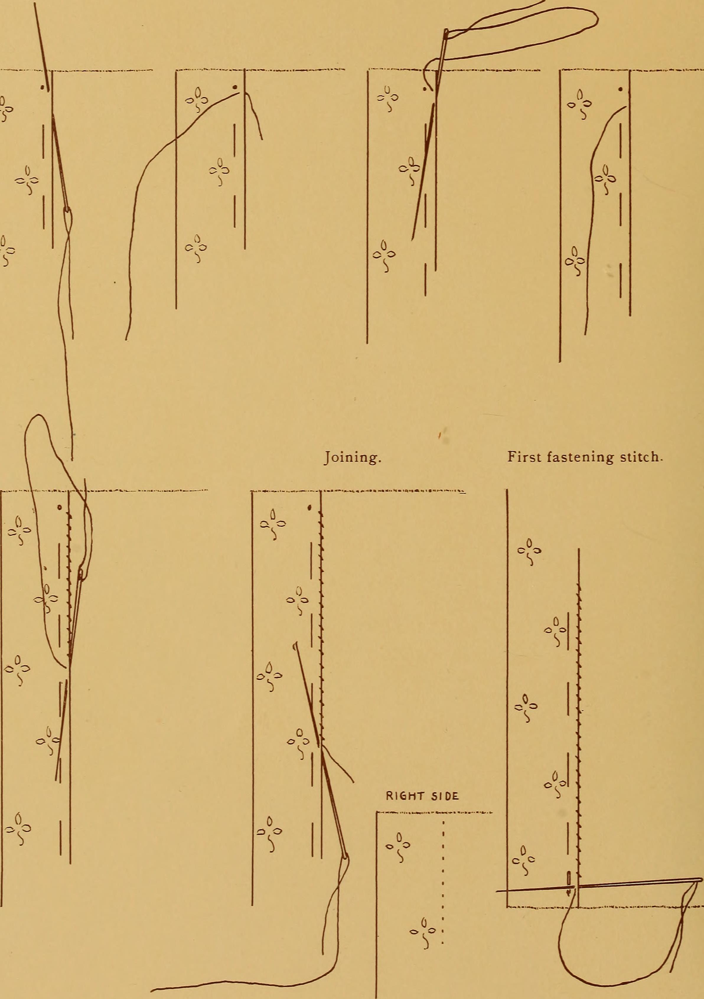

1. The Mechanical Anatomy of Openwork Cutwork
In the hierarchy of textile embellishment, cutwork embroidery—and specifically nineteenth-century Broderie Anglaise—occupies a unique intersection between woven cloth and freestanding lace. While needlepoint laces like Venetian gros point create delicate bridges out of thin air, Broderie Anglaise constructs intricate openwork patterns by selectively introducing negative space into an existing woven textile ground.
However, introducing thousands of open geometric apertures into a lightweight plain-weave cotton batiste introduces a severe mechanical vulnerability: the disruption of warp and weft yarn continuity. In any plain-weave fabric, tensile strength is maintained by the interlacing friction of continuous yarns. The moment a hole is created, severed yarn ends naturally seek to unravel under ambient tension.
In commercial garment manufacturing, eyelets are cut using hollow circular punches or computerized industrial lasers. While rapid and uniform, these punch-cutting methods sever hundreds of warp and weft yarns, creating raw, unanchored fiber ends. At Broderie Flair, we maintain the historic nineteenth-century discipline of non-destructive stiletto displacement.

2. Stiletto Displacement Kinetics: Preserving Continuous Yarn Filaments
The primary instrument of authentic Broderie Anglaise is the embroidery stiletto—a tapered tool carved from polished bovine bone, mother-of-pearl, or hardened surgical steel. Unlike an awl or blade, the stiletto possesses no sharp cutting edges; its tip is rounded into a parabolic micro-point, expanding gradually to the target eyelet diameter (typically between 1.5 and 5.0 millimeters).
When the artisan gently inserts the stiletto into the microscopic interstitial space between four adjacent yarns, the expanding conical geometry exerts radial outward pressure. The warp and weft threads are pushed sideways, bending gracefully around the tool's circumference. The fibers are not severed; they are bunched and compacted into a dense, continuous perimeter ring.
Immediately upon withdrawing the stiletto, the embroiderer secures this compressed ring using an unbroken sequence of overcast or buttonhole stitches executed with fine 80-count Egyptian cotton thread. Each stitch passes through the center of the eyelet, wraps tightly around the displaced yarns, and locks onto the adjacent fabric ground.
3. Comparative Matrix: Eyelet Fabrication Technologies
To objectively evaluate the structural longevity of hand-pierced stiletto eyelets versus modern industrial alternatives, our Mercer Street conservation laboratory subjected diverse eyelet samples to fifty standardized laundry wash-and-press cycles.
| Eyelet Fabrication Method | Fiber Integrity Status | Tensile Burst Strength | Fraying Factor (50 Washes) | Distortion Under Bias Pull | Historical Authenticity |
|---|---|---|---|---|---|
| Hand-Pierced Bone Stiletto + Overcast | 100% Intact (Displaced Yarns) | 18.4 kg / eyelet (Highest) | 0.0% (Zero Fiber Loss) | Resists distortion naturally | Haute Couture Standard |
| Stiletto Pierced + Machine Satin Ring | 95% Intact (Minimal Needle Snip) | 14.2 kg / eyelet | 2.5% (Mild Surface Whiskering) | Slight oval stretching | Mid-Century Swiss Mill |
| Hollow Rotary Punch Cutwork | 0% Intact (All Yarns Severed) | 5.8 kg / eyelet (Low) | 42.0% (Severe Unraveling) | Holes tear along warp lines | Mass Fast-Fashion Standard |
| Thermal Laser Vaporization | Charred / Melted Polymer Edges | 7.2 kg / eyelet | 28.0% (Stiff, brittle edges) | Cracks upon laundering | Synthetic Modern Cutwork |

4. Hoop Tension Mechanics: Preventing Puckering and Radial Warp Bias
A major hazard in fine whitework embroidery is fabric puckering. When hundreds of overcast stitches are pulled taut around an eyelet, the cumulative thread tension can pull the surrounding ground cloth inward, creating unsightly wrinkles that cannot be ironed flat.
To counteract this radial pull, master embroiderers mount the fabric inside a dual-ring tambour hoop made of seasoned beechwood. The fabric is tensioned uniformly along both the longitudinal warp and transverse weft directions until the cloth resonates with a crisp, drum-like pitch when tapped with a finger.
While tensioned in the hoop, the embroiderer works with calibrated stitch tension. Every pull of the needle is executed with uniform kinetic force, ensuring that the overcast loops compress the stiletto-displaced yarns without drawing the surrounding weave out of alignment. When the finished embroidery is released from the hoop, the fabric relaxes into a perfectly flat, planar sheet with crisp, open apertures.
5. Scalloped Hemline Physics: Cordonnet Armatures and Cutwork Shearing
The most iconic feature of Broderie Anglaise is its scalloped edge—the undulating, wave-like border that trims collars, sleeve cuffs, and gown hemlines. Unlike a standard turned hem, a scalloped eyelet hem has no hem allowance folded behind it; the edge of the embroidery is the literal edge of the garment.
To prevent this exposed edge from fraying or rolling under body movement, our artisans lay down a cordonnet—a bundle of three to six strands of unspun padding cotton that follows the serpentine curve of the scallops.
The embroiderer then executes dense buttonhole stitches directly over the cordonnet, placing forty to fifty stitches per linear centimeter. The knotted purl edge of the buttonhole stitch faces outward toward the raw edge. Once the stitching is completed, the artisan trims away the excess fabric using micro-curved embroidery scissors, cutting within 0.1 millimeters of the purl knots.
The internal cordonnet armature acts as a flexible composite beam. It provides sufficient vertical stiffness to hold the crisp curve of the scallop while allowing the hemline to ripple and dance with effortless kinetic grace as the wearer walks.